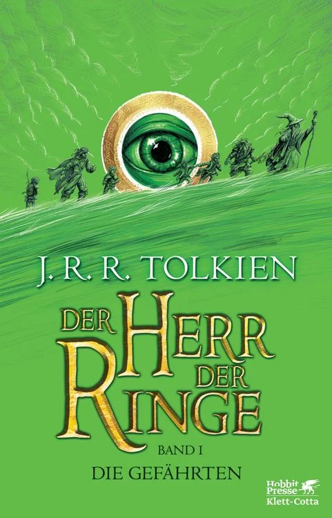
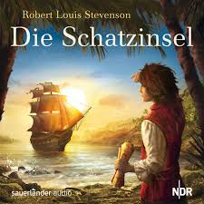

Der Herr der Ringe Autor: J.R.R. Tolkien  „Nicht alle, die wandern, sind verloren.“ Mehr über das Buch...
Harry Potter Autor: J.K. Rowling „Es sind unsere Entscheidungen, Harry, die zeigen, wer wir wirklich sind.“ Mehr über das Buch...
Die Schatzinsel Autor: Robert Louis Stevenson  „Kein Schatz auf Erden kann mit einem Freund verglichen werden.“ Mehr über das Buch...